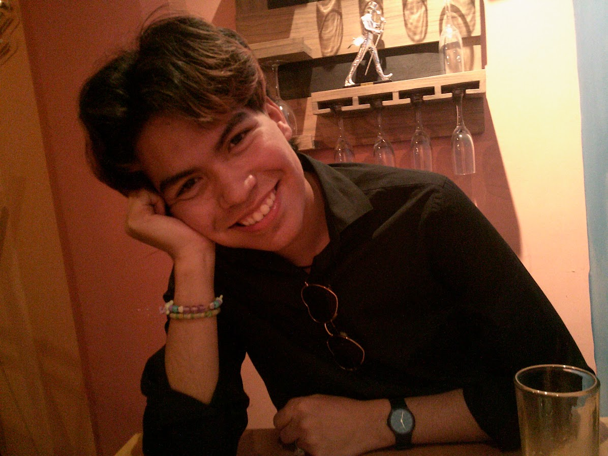
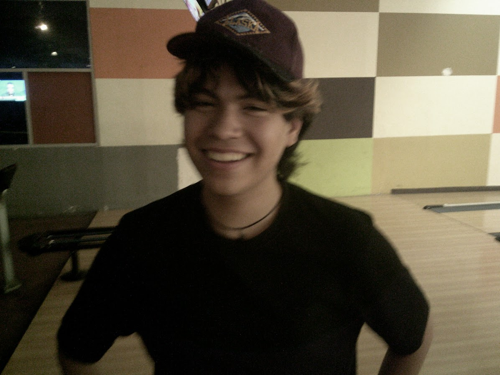
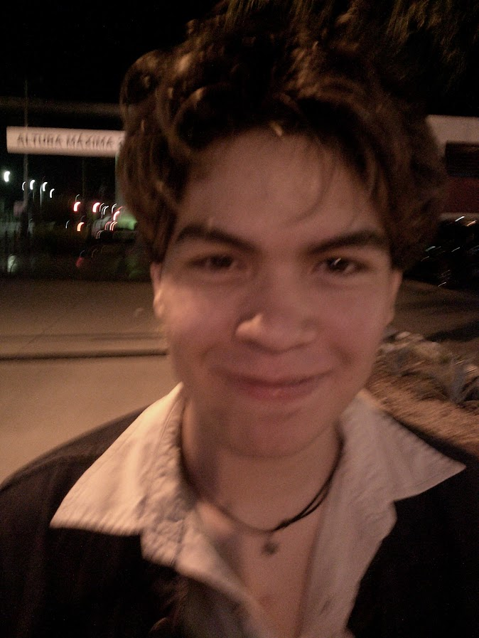
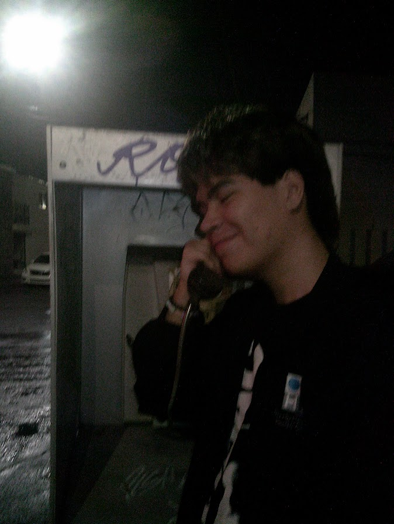
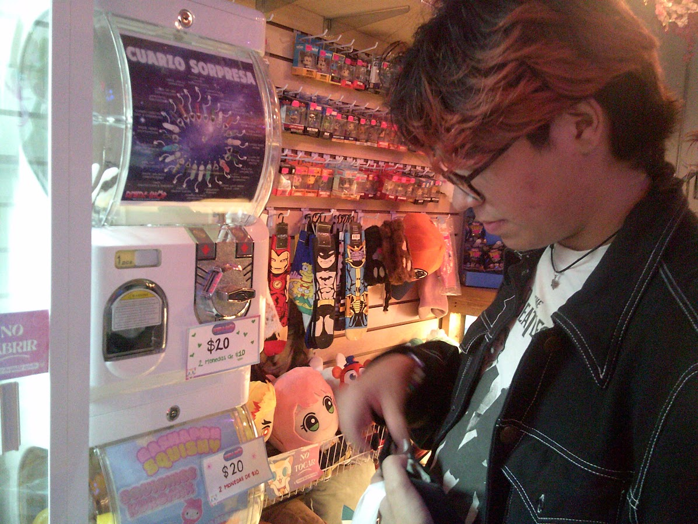
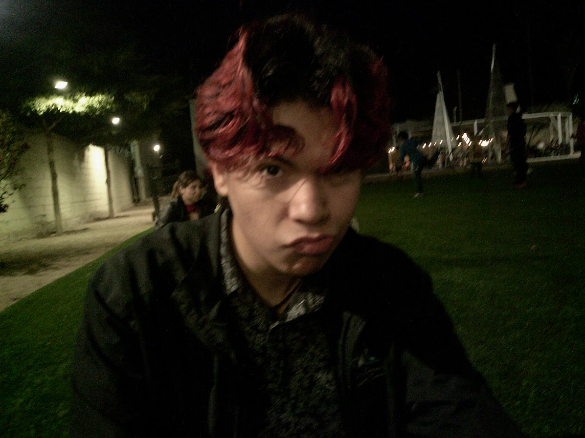
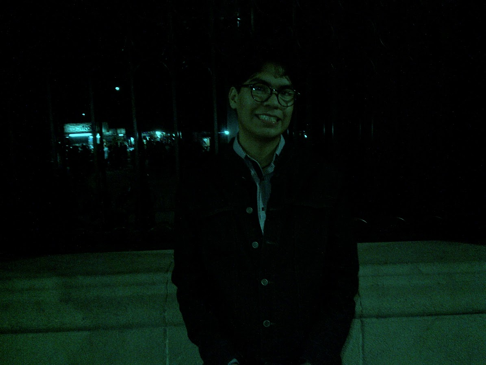
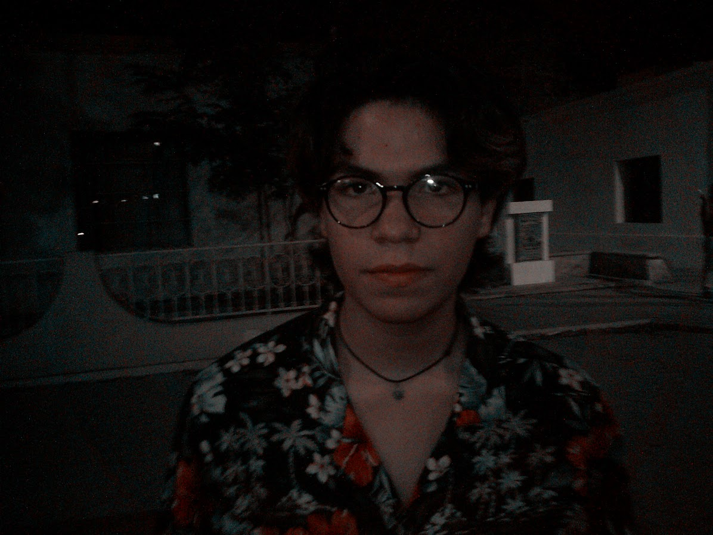

Bienvenidos a la hermosa galería de fotos de Ángel Yahvéh
Empezemos...
Él en nuestro segundo San Valentin. Este fue un día super padre, mejor que nuestro primer San Valentin creo yo, el restaurante al que fuimos estaba bien padre, nos sentamos en un lugar apartado y muy bonito, la comida estuvo muy rica, y cuando salimos fuimos al cerro de la campana y creeeo si la memoria no me falla que fue la primera vez que fuimos y vimos la ciudad y así.

Él en los bolos (pro). Sin duda mi Yahvéh es mucho mejor que yo en los deportes, y los bolos no son la excepción. Yo siempre le agarro la maña a cómo tirar bien la bola cuando ya solo me quedan como 3 turnos, pero a él en general le va bien. Ahí se veía pos bien kawai y feliz.

Él en nuestro segundo aniversario. Nuestro segundo aniversario fue un día muy esperado y de hecho creo que repartimos las actividades en unos dos días, este fue el primero, en realidad era el sábado 20 pero fuimos a comer en catedral y nos quedamos hasta tarde y pasó la media noche y ahí realmente fue nuestro aniversario.

Él en su spot de fotos favorito. Este también está por catedral, como la mayoría de nuestras salidas y lugares favoritos. El spot está muy padre y el modelo ta wapísimo, pero también el lugar está oscuro así que nomás tomamos muchas fotos como en un minuto y luego nos vamos corriendo de ahí pq no vaya a ser. Ese día estuvo padrísimo porque llovió en catedral y lo mejor del mundo es estar en catedral cuando llueve.

Él cuando fuimos a Japón. Esta foto es a lado del parque madero y fue cuando conocimos por primera vez el anime shop en Japón, Sonora y comimos buldak instantánea con sus máquinas coreanas. Está bien padre comer ahí porque descubrimos una nueva forma de ponerle el huevo a la buldak. El Ángel y yo somos los fans número de la buldak en hermosillo sin duda, comemos la más picante y las preparamos de las maneras más deliciosas, les ganamos a todos.

Él cuando tenía su cabello rojo. Yo me pinté el cabello rojo primero pero como el es mi novio y quiere hacer todo lo que yo haga entonces me pidió que también se lo pintara. La verdad es que rockeó el look de cabello rojo, se veía muy wapo y muy juvenil. Después volvió a su color natural y también se pintó de negro, pero hoy lo tiene rojo sutilmente con los tintes que usan las mamás.Este día fuimos a la ruina a comer chetos flamin.

Él en nuestro primer San Valentin. Al igual que el segundo y el tercero, y que todos los que están por venir ya que realmente yo creo que San Valentín es el día en el que mejor nos salen todos los planes, nuestro primer san valentin fue super padre. El 14 de febrero como tal fue un día de clases, y como estábamos en la prepa pos ese día nos vimos en mi casa y nos dimos regalos y así, y el día que realmente salimos fue el fin de semana de esa semana, el sábado 17. Ese día fuimos al musas ya que los dos somos personas muy cultas y muy inteligentes que sabemos apreciar el arte, ahí tomamos muchas fotos y luego nos fuimos a comer a catedral, como él es un caballero el pagó todo jejej, comimos amborguesas y todo tuvo delicioso, también vimos al payasito de catedral que es muy chisyoso. En la noche cuando cada quién se fue a su casa él llegó a ver los resultados de las peleas y se sorprendió enormemente porque Topuria había ganado y seguía escalando en la ufc.

Él en Villa de Seris. Este día nos subimos al trolebus por primera vez al recorrido por el centro histórico de la ciudad y así, pasamos por el centro de gobierno y estuvimos en villa de seris un rato, luego nos llevó al centro y ahí contaron leyendas y al final regresamos a catedral.

Finalmente, él golpeando la piñata. Aquí fue en una posada de mi mamá el año pasado, como pueden ver, le pegó muy fuerte a la piñata.
Eso fue todo por hoy en la galería, tampoco les voy a enseñar todas mis fotos porque tampoco quiero que lo miren mucho ya que es mio.